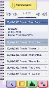

Calendar Stats

Platform/OS: Nokia Symbian OS
Supported Devices: S60 5th edition (Nokia 5800, X6, 5230, N97) / New Symbian(^3) (Nokia N8, C7, C6, E7)
Latest Version: v1.0
Download from: 
Description: Calendar Stats provides simple statistics for your device calendar and is also a powerful search utility.
Find exactly when and how many times you have participated in meetings for the Project X in the last three months. Find out the monthly average of the movies that you have seen last year and compare it with current year's average. In your calendar are hiding invaluable informations about your life, discover them now. Calendar Stats is your calendar's valuable companion.
Features:
- Powerful Calendar Search features:
- Two options when searching for multiple keywords: 1. ALL keywords must be found in a calendar entry, 2. At least ONE keyword must be found in a calendar entry. [Screenshot]
- Convenient search period presets that be calculated automatically (Last 30 days, This month (until today), Previous year, Until the end of this year, etc.) [Screenshot]
- Manual definition of the exact Start Date and End Date of the search period, either by typing the dates with device keyboard, or by using the convenient Date Picker UI. [Screenshot]
- One-click option to set search period from the Start of the calendar until specific date, or from specific date until the End of the calendar. [Screenshot]
- Supports search for every calendar entry type (Meeting, Anniversary, To-Do etc.) as also for the Location property of each calendar entry.
- Search Results with full details for every calendar entry:
- Synoptic list with search results sorted by Date.
- In-place full details for every calendar entry as: entry type, start - end date/time of event, full description and location of each entry. [Screenshot]
- Simple statistics for your calendar:
- Analytical tables with the number of calendar entries per month of each year.
- Monthly average per year for the calendar entries of the search. [Screenshot]
- More statistics in next versions of Calendar Stats app...
- Advanced mobile application features:
- Built-in announcement system: Calendar Stats informs user with the latest announcement from Mobilergon's server in update check procedure. [Screenshot]
- In-app version update system: Calendar Stats checks for new version, displays change log, downloads and installs the new version in user's smartphone with one-click procedure. [Screenshot]
Language / Localization Support:
- Calendar Stats UI currently have been translated in two languages: English and Greek
- Calendar Stats, currently, supports 43 languages for the Date Picker UI, the date format of calendar entries and device's clock settings. [Screenshot] [Screenshot]
- Language of the UI, the Date Picker UI and the date format is automatically set according phone's language setting.
Known Issues:
- In some languages, if phone's clock setting for Time format is 12-hour, Calendar Stats cannot calculate the statistics.
- Please use the simple in-app bug report and send us mail to support_at_mobilergon.com to include your language in next version.
- Workaround (until next version): Set Time format of your phone's clock setting to 24-hour option.
- In Nokia S60 5th edition smartphones with old firmware versions (ex. Nokia 5230 with firmware version 12.0.089) that do not full support kinetic scrolling, it is inconvenient to scroll calendar entries in Results page or analytical tables in Statistics page.
- Please update your device to latest firmware!
- In Nokia S60 5th edition smartphones with old firmware versions, we have also noticed that UTF-8 characters are not displayed correctly.
- If Calendar Stats does not display your language's characters correctly, then please update your device to latest firmware!
Change Log:
- Version 1.0 (20/1/2011)
- Initial Release.
Screenshots:
Search page, Results page and Statistics page (English UI)

Search page, Results page and Statistics page (Greek UI)
Support MobilErgon:
- Support development of Calendar Stats app, make a donation with PayPal

- Write a review in Calendar Stats' page in Ovi Store
- "Like" MobilErgon's Facebook page or Follow our Twitter account